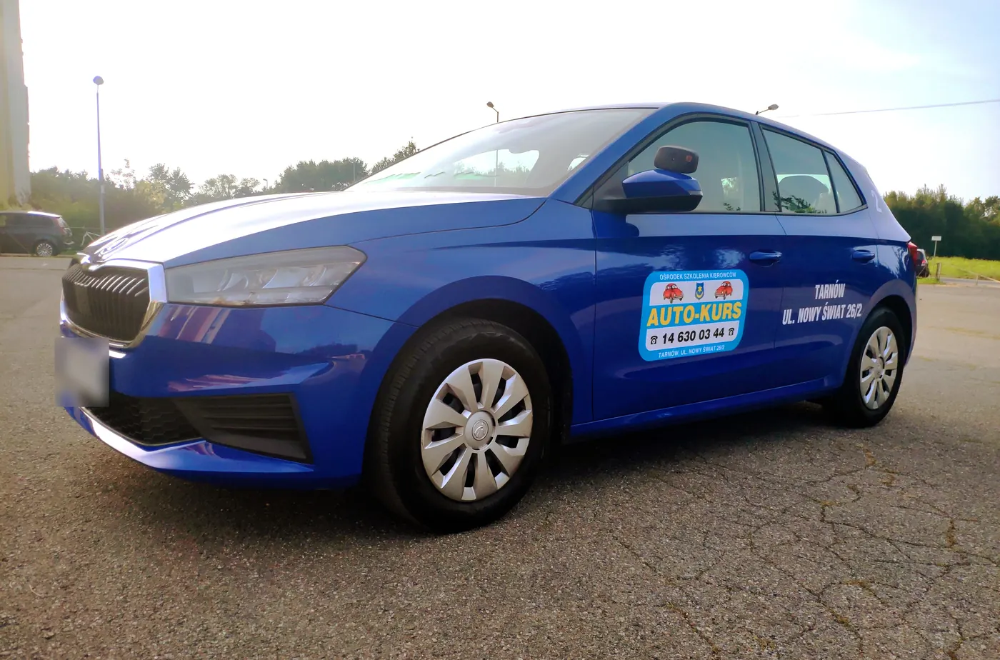
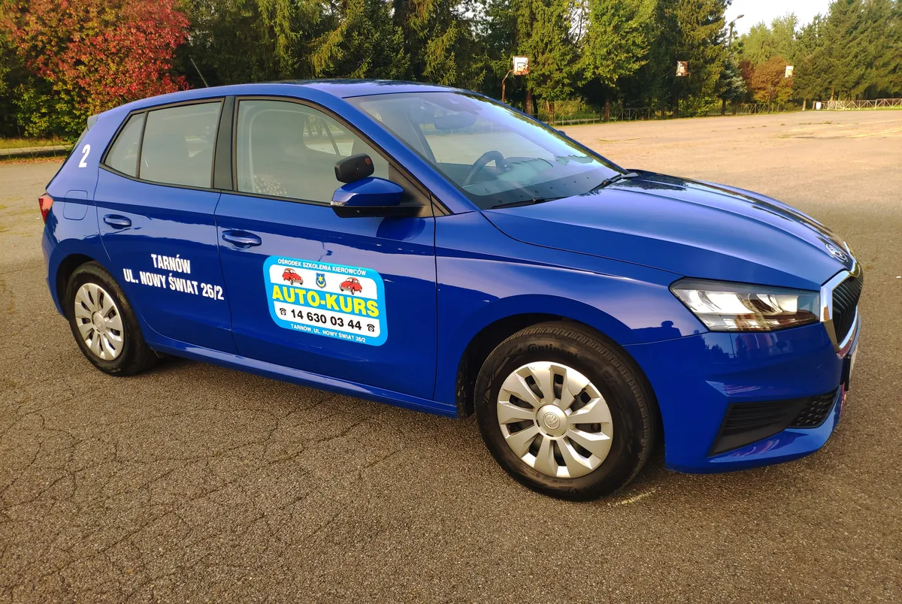
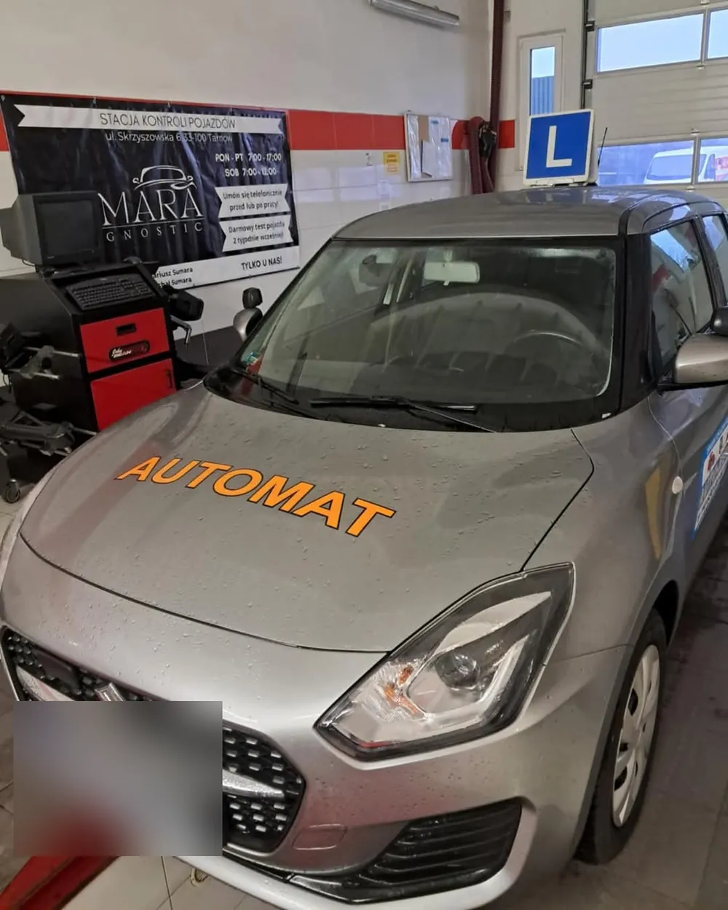
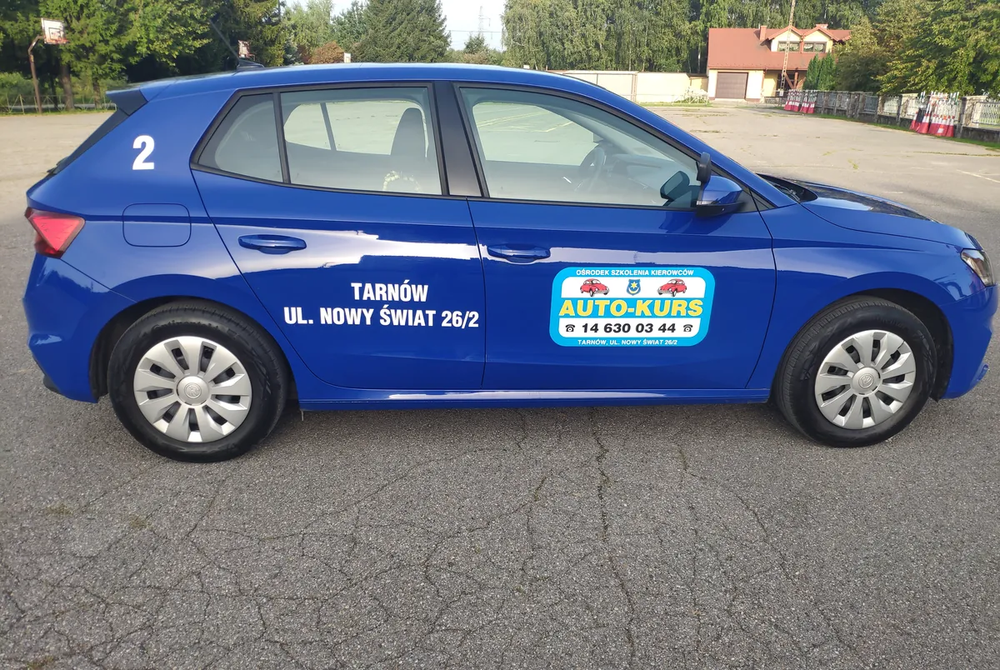
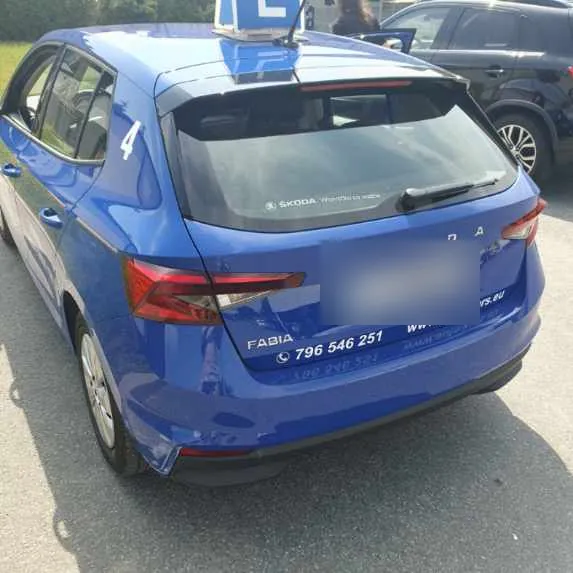
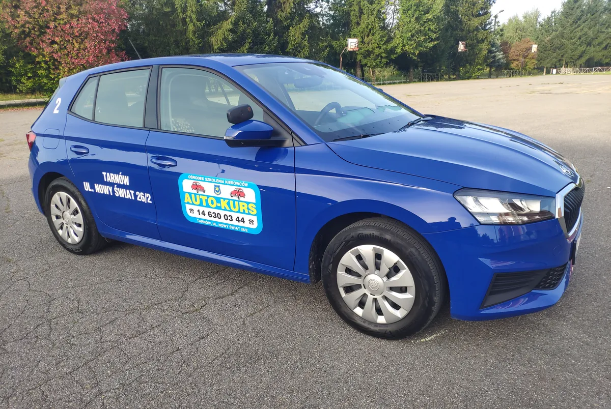

Kurs kat. B
Podstawowy
3 700 zł
- teoria zgodnie z harmonogramem ośrodka
- 30 godzin jazd
- z Kartą Dużej Rodziny 100 zł taniej

Kurs prawa jazdy kategorii B w Tarnowie, na skrzyni manualnej albo automatycznej. Jazdy od 7:00 do 21:00, uczymy przy ul. Nowy Świat 26/2 od 1994 roku.
Zapisz się na kursW każdym kursie: 30 godzin lekcyjnych teorii, egzamin wewnętrzny teoretyczny i praktyczny, szkolenie z pierwszej pomocy z ratownikiem medycznym i materiały szkoleniowe. Cena jest stała przez całe szkolenie, płatność także w nieoprocentowanych ratach.
3 700 zł
4 600 zł
4 700 zł
4 700 zł
Automat albo manual do wyboru w każdym kursie. Zniżka z Kartą Dużej Rodziny nie łączy się z innymi promocjami. Ceny z cennika auto-kurs.eu, stan na 13.11.2026.
Kurs możesz zacząć, gdy masz skończone 17 lat i 9 miesięcy oraz numer PKK (profil kandydata na kierowcę). Większość formalności załatwisz u nas w ośrodku.
Wykłady trwają około 2 tygodni. Czas szkolenia praktycznego zależy od tego, jak często będziesz jeździć. Jazdy prowadzimy codziennie od 7:00 do 21:00.
Tak, kursant ma możliwość wyboru instruktora.
W nieoprocentowanych ratach, gotówką lub kartą w biurze, albo przelewem na konto ośrodka: BNP Paribas 14 1600 1462 1834 2420 3000 0001.
Kurs jest ważny bezterminowo. Jeśli przerwiesz szkolenie i przestaniesz się pojawiać, ośrodek musi zwrócić Twój PKK, a wtedy kurs trzeba zacząć od nowa.
Przy dużym zainteresowaniu kursami czas oczekiwania na jazdy może się wydłużyć. Zadzwoń, powiemy, jak wygląda grafik w tej chwili.
Ośrodek Auto-Kurs działa w Tarnowie od 1994 roku. Przez ten czas prawo jazdy zdobyło u nas kilka tysięcy osób. Uczymy tak, żeby zdać egzamin państwowy, ale przede wszystkim żeby potem jeździć bezpiecznie i pewnie w każdych warunkach.
Niebieskie Skody Fabia z naklejką Auto-Kurs i srebrny automat. Na egzaminie w MORD Tarnów nic Cię nie zaskoczy.





Ponad 400 najwyższych ocen na portalu superprawojazdy.pl. Poniżej kilka opinii, które kursanci zostawili o ośrodku.
Jazdy z Panem Markiem Kociarą rewelacja! Bardzo duże doświadczenie, spokój, konkretny, wymagający, ale to owocuje bardzo dobrym przygotowaniem do codziennej jazdy jak i na egzamin.
Bardzo dobre przygotowanie do egzaminu, oba egzaminy zdane za pierwszym razem, miła atmosfera, profesjonalne wytłumaczenie sytuacji na drodze jak i na wykładach.
Ciekawe wykłady. Indywidualne i profesjonalne podejście do każdego z kursantów. Brak presji podczas nauki. Szkoła świetnie przygotowuje do egzaminów.
Wykłady prowadzone ciekawie i rzeczowo, godziny jazd zawsze można dopasować do potrzeb pracy i szkoły. Instruktorzy kompetentni i punktualni.
Świetna praktyka, szczegółowa teoria, ale w zabawnym nastroju, zawsze miła atmosfera, możliwość dostosowania godzin praktyk do potrzeb kursanta.
Wszystko, czego potrzebujesz od zapisu do egzaminu, w jednym miejscu.
Najszybciej przez telefon. Możesz też zostawić numer, oddzwonimy i dobierzemy termin kursu.